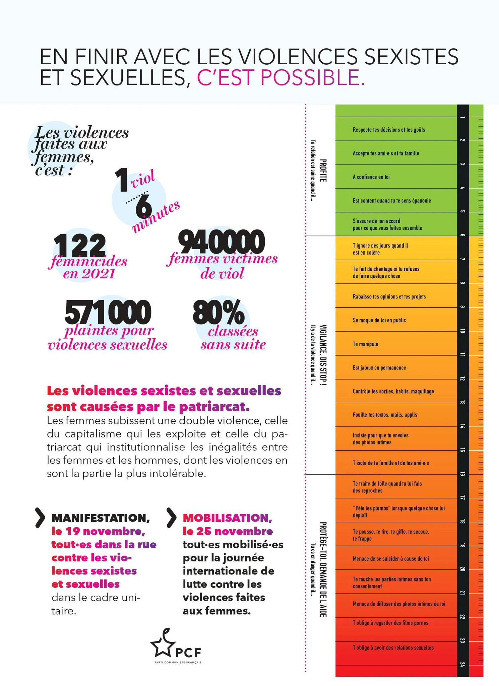
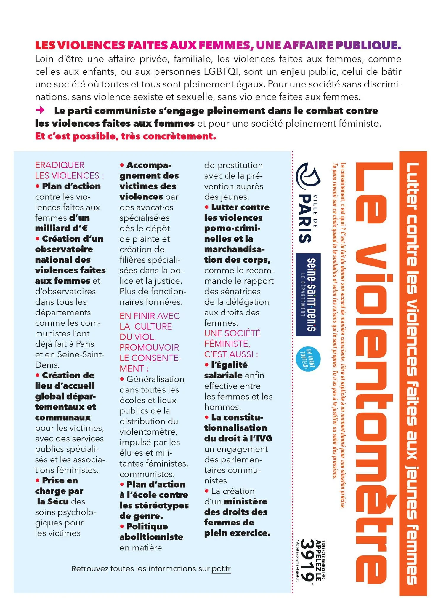

Publication d’archives
Contre les violences sexistes et sexuelles, le PCF se joint à l'appel à manifester du collectif #NousToutes le…
Date indiquée par Facebook · 15 novembre 2022
Texte conservé avec la publication
Contexte du dossier
Le 5 octobre, la page relaie la une de L’Humanité pour les cinq ans de #MeToo. Le 31, elle annonce la reprise du Red Social Club, avec une soirée du 4 novembre consacrée à « LGBTQIA+ et lutte des classes » et un représentant de la commission Fièr.es et Révolutionnaires. Le 15 novembre, elle rejoint l’appel unitaire NousToutes pour le 19 à la Brèche. Ces initiatives portent des objets distincts, reliés par une exigence : entendre les personnes concernées et combattre les dominations sans séparer les droits des conditions sociales. Les invitations ne suffisent pas à attester le déroulement de chaque rendez-vous.


Sources
Archive rouge · export Facebook · AR-0002-FB-01814
À lire aussi · La révolution #MeToo a 5 ans.